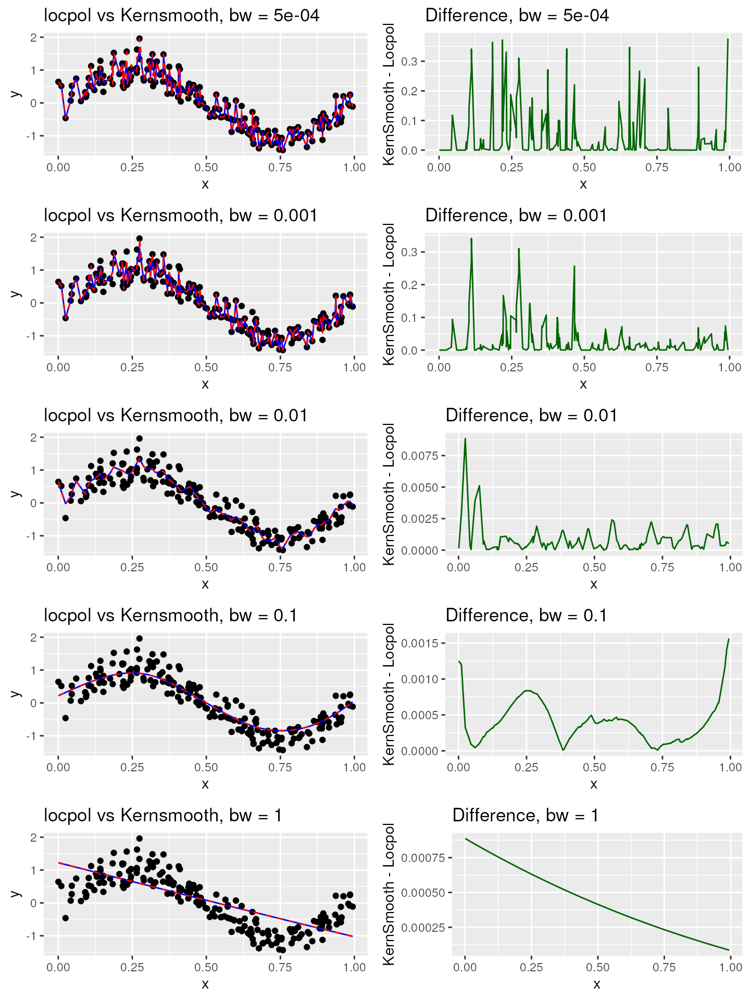
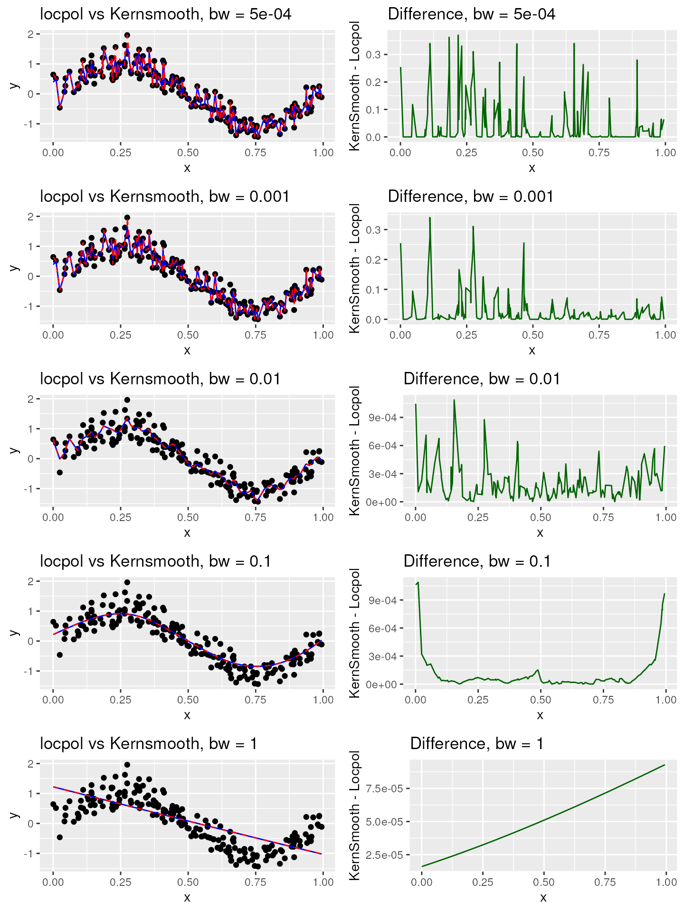

In the process of estimating non-parametric exposure response
functions, we employ two local polynomial regression methodologies:
locpol and KernSmooth. The
KernSmooth package, however, does not support weighted
data. Consequently, we leverage the counter_weight column
from the pseudo population to replicate our data.
For the matching approach, the procedure is quite
straightforward. Given that the counter_weight column
values are integers, we can directly replicate the data. Conversely,
when dealing with the weighting approach, certain
approximations become necessary. Our strategy involves rounding the
weights to 2 (or 3) decimal places, multiplying the resultant weights by
100 (or 1000), converting these figures into integer values, and finally
replicating the data.
This document aims to evaluate the degree of difference and sensitivity in the results in relation to the chosen multiplication factor. It’s important to remember, however, that opting for larger multiplication values may lead to significant memory consumption, posing computational challenges.
library(KernSmooth)
#> KernSmooth 2.23 loaded
#> Copyright M. P. Wand 1997-2009
library(locpol)
library(ggplot2)
library(gridExtra)
compare_smooth_methods <- function(multiplication_factor) {
# create some sample data
set.seed(123)
n <- 200
x <- runif(n)
y <- sin(2*pi*x) + rnorm(n, 0, 0.3)
w <- runif(n)
count <- as.integer(floor(w * multiplication_factor))
data <- data.frame(x = x, y = y, weight = w, count = count)
data_rep <- data[rep(1:nrow(data), data$count), , drop = FALSE]
rownames(data_rep) <- NULL
bw_values <- c(0.0005, 0.001, 0.01, 0.1, 1)
plot_list <- list()
for(i in 1:length(bw_values)) {
bw <- bw_values[i]
smoothed_val <- stats::approx(KernSmooth::locpoly(data_rep$x,
data_rep$y,
bandwidth = bw,
gridsize=1000),
xout=data$x,
rule=2)$y
val <- locpol::locpol(formula = y ~ x,
data = data,
bw = bw,
weig = data$weight,
xeval = data$x,
kernel = locpol::gaussK)
kernsmooth_val <- data.frame(x = data$x, kernsmooth = smoothed_val)
locpol_val <- data.frame(x = val$lpFit$x, locpol = val$lpFit$y)
merged_df <- merge(kernsmooth_val, locpol_val, by = "x")
merged_df$difference <- abs(merged_df$kernsmooth - merged_df$locpol)
g1 <- ggplot(data = data) +
geom_point(aes(x = x, y = y)) +
geom_line(data = merged_df, aes(x = x, y = kernsmooth,
color = "KernSmooth"), size = 0.5) +
geom_line(data = merged_df, aes(x = x, y = locpol, color = "Locpol"),
size = 0.5, linetype = "dashed") +
labs(title = paste("locpol vs Kernsmooth, bw =", bw),
color = "Method") +
scale_color_manual(values = c("KernSmooth" = "blue", "Locpol" = "red")) +
theme(legend.position = "none")
g2 <- ggplot(data = merged_df, aes(x = x, y = difference)) +
geom_line(color = "darkgreen", size = 0.5) +
labs(title = paste("Difference, bw =", bw), y = "KernSmooth - Locpol") +
theme(legend.position = "none")
plot_list[[2*i-1]] <- g1
plot_list[[2*i]] <- g2
print(paste("Max residual for bw = ", bw, ": ", max(merged_df$difference)))
}
return(plot_list)
}In the subsequent visualizations, the dashed red line denotes
locpol, while the solid blue line stands for
kernsmooth.
Multiplication factor: 100
plot_list_100 <- compare_smooth_methods(100)
#> Warning: Using `size` aesthetic for lines was deprecated in ggplot2 3.4.0.
#> ℹ Please use `linewidth` instead.
#> This warning is displayed once every 8 hours.
#> Call `lifecycle::last_lifecycle_warnings()` to see where this warning was
#> generated.
#> [1] "Max residual for bw = 5e-04 : 0.376724232844119"
#> [1] "Max residual for bw = 0.001 : 0.34102886655536"
#> [1] "Max residual for bw = 0.01 : 0.00885525713034725"
#> [1] "Max residual for bw = 0.1 : 0.0015642091493715"
#> [1] "Max residual for bw = 1 : 0.000887744632188214"
grid.arrange(grobs = plot_list_100, ncol = 2)
Multiplication factor: 1000
plot_list_1000 <- compare_smooth_methods(1000)
#> [1] "Max residual for bw = 5e-04 : 0.37053801414259"
#> [1] "Max residual for bw = 0.001 : 0.340214416795152"
#> [1] "Max residual for bw = 0.01 : 0.001086480021527"
#> [1] "Max residual for bw = 0.1 : 0.00108884634631823"
#> [1] "Max residual for bw = 1 : 9.28881533373005e-05"
grid.arrange(grobs = plot_list_1000, ncol = 2)
The visualizations clearly illustrate that the significance of the multiplication factor diminishes as the bandwidth value escalates. Therefore, within our package, we’ve opted to utilize a multiplication factor of 100. We caution that employing a multiplication factor of 1000 could potentially trigger memory overflow errors when handling medium to large datasets. Should you require control over the multiplication factor, we encourage you to open an issue.